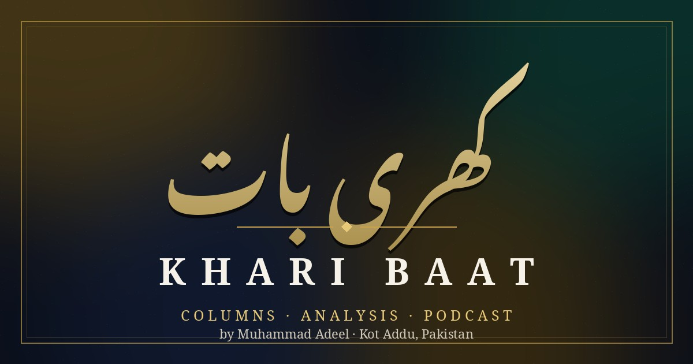
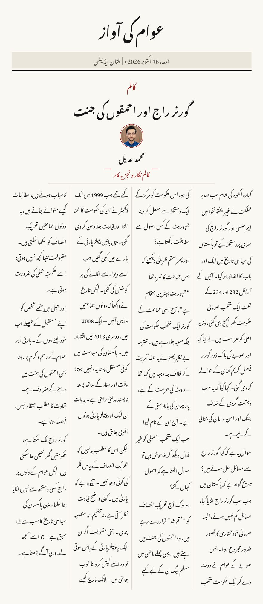

Columns · Analysis · Podcast
Khari Baat
Straight, clear and blunt — bilingual columns in Urdu and English on politics, society and the questions everyone is asking. سیدھی، صاف اور کھری بات۔

Latest Column
From the Notebook
تازہ ترین کالم
23 October 2026 · Economy · Urdu + English
Inflation Hits 10 Percent, Your Salary Does Not
مہنگائی دس فیصد، تنخواہ وہیں کی وہیں
Ten percent. That may be the most repeated number in Pakistan these days. September's inflation figure, released by the Pakistan Bureau of Statistics, came in at 10.3 percent. In August it was 11.1 percent, so the official word is that inflation is coming down. In the bazaar, nobody has noticed it coming down. People have a shorter word for all this: mehngai.
Read the full column
About the Author
Muhammad Adeel
کالم نگار و تجزیہ کار
Muhammad Adeel writes on Pakistani politics and society in plain, direct language — the kind a reader finishes. His columns appear in Urdu and English side by side, because the questions he raises belong to everyone.
Alongside his writing, he works as a Social Media Manager and Content Creator, and hosts Podcast with Adeel. He is based in Kot Addu, Pakistan, and works with readers and clients remotely.
On Khari Baat he gives the topic his full research first, then writes it the way he would say it — no decoration, no borrowed outrage.
In Print
The Newspaper Column
Every column is also composed as a classic newspaper page — masthead, columns and byline — the way it would sit on a printed broadsheet.

گورنر راج اور احمقوں کی جنت — Urdu newspaper edition, 16 October 2026.
Archive
All Columns
New columns are added here as they are published — Urdu and English, always together.
Podcast with Adeel
The same voice, in audio. Muhammad Adeel's podcast conversations sit alongside the columns — follow the blog for new episodes and written pieces, published together.
Contact
Write to the Author
For column feedback, topics, or professional work — one message is enough.